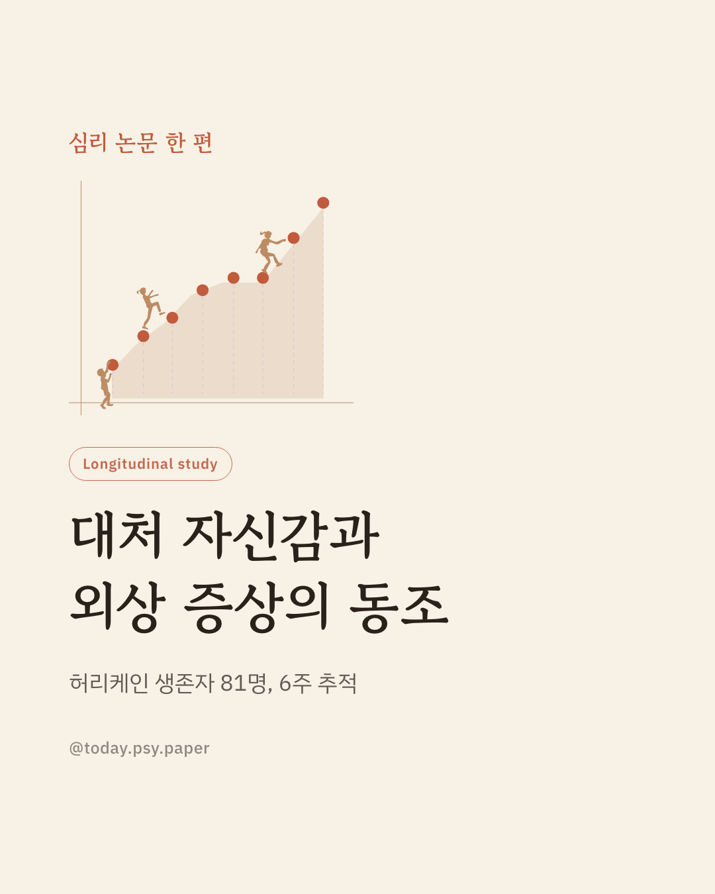
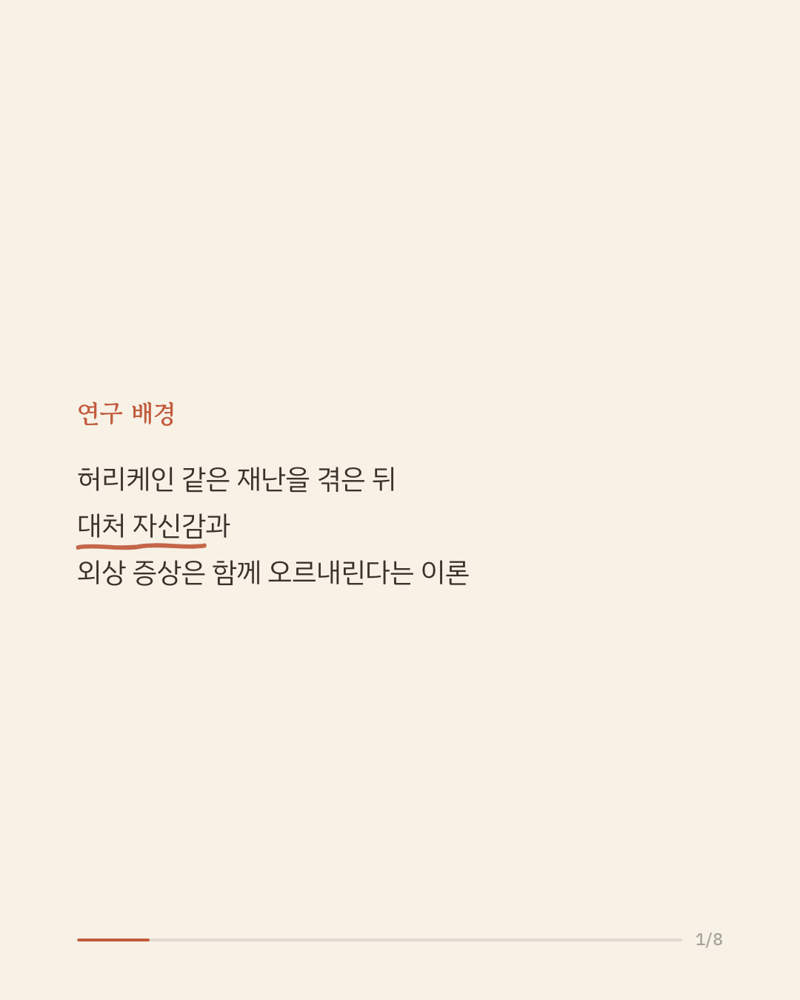
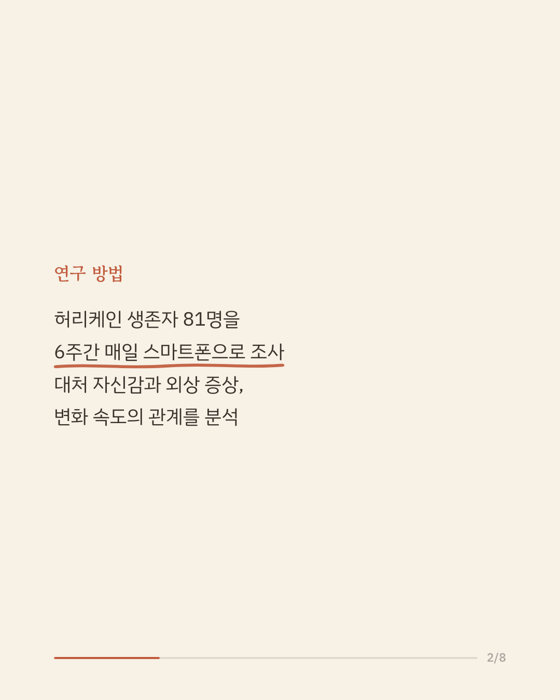
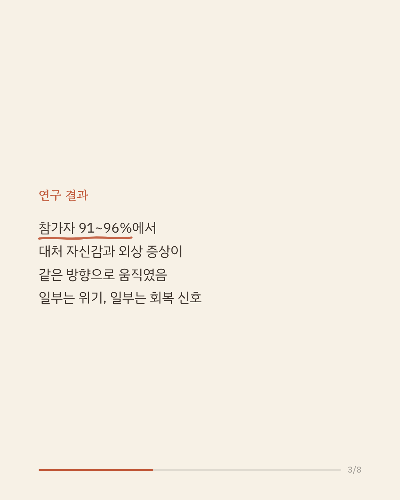
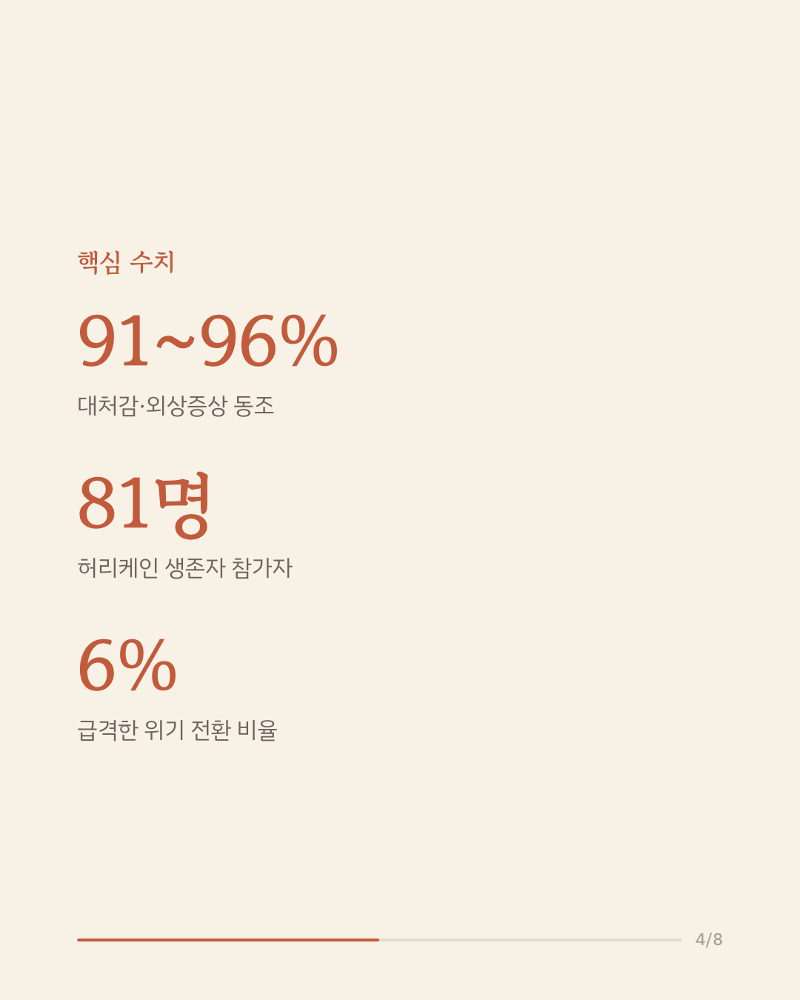
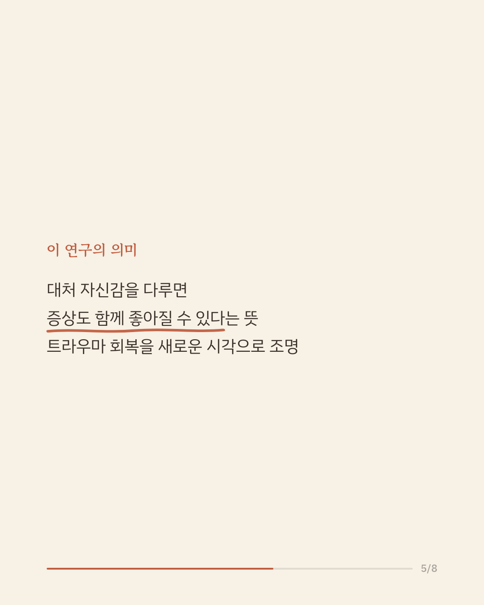
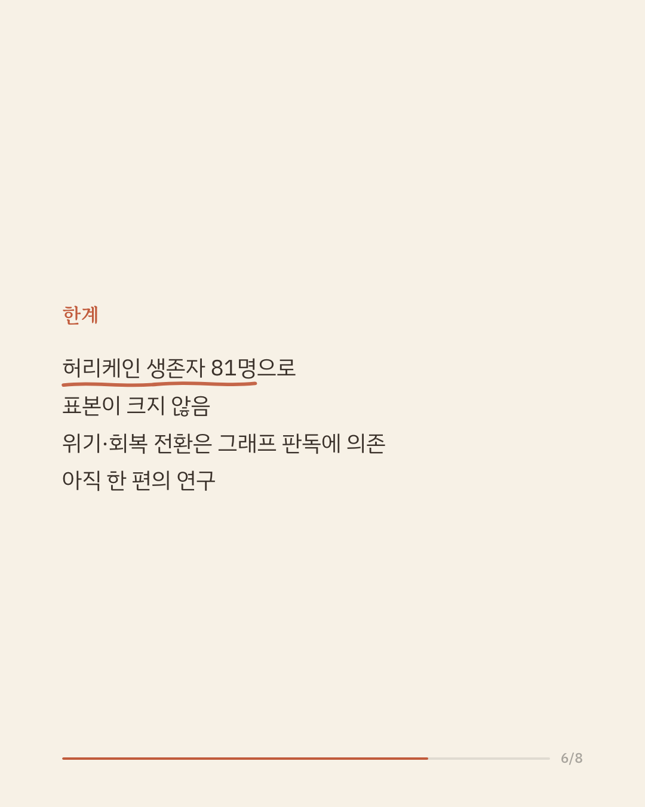
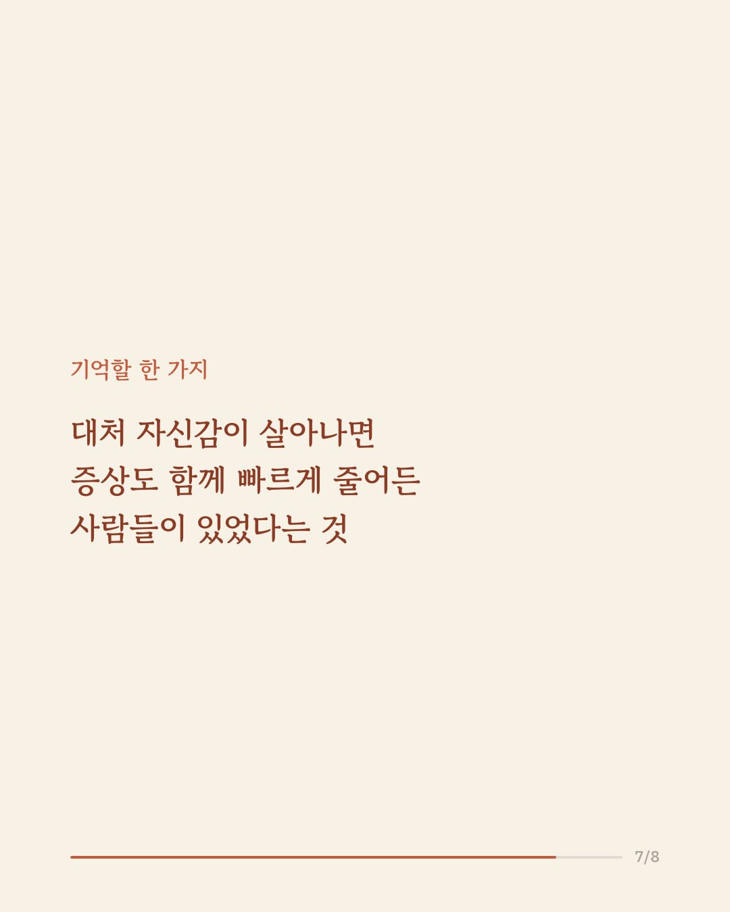
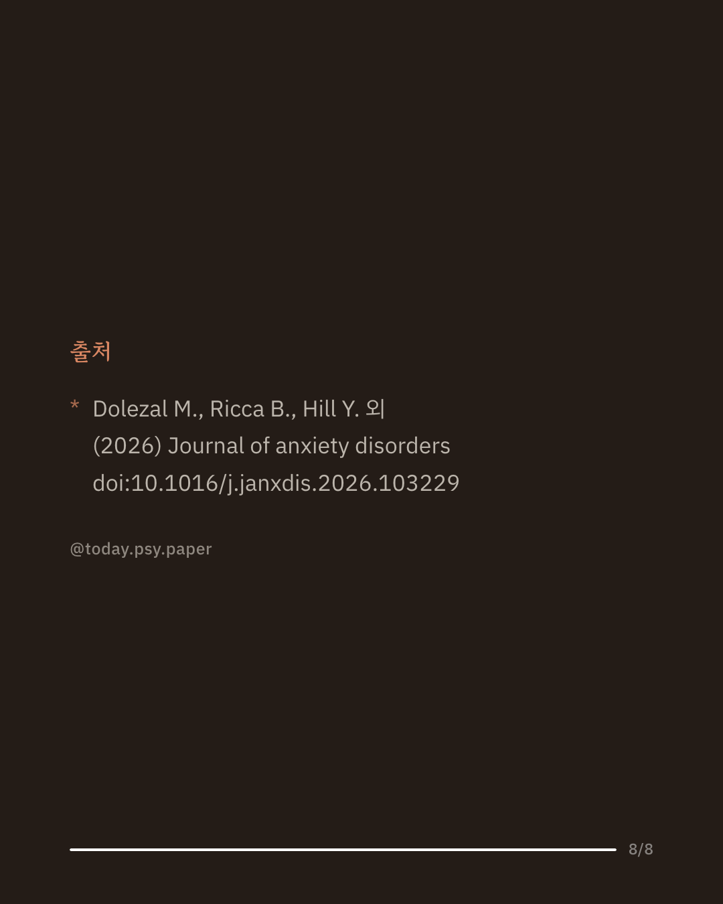

큰 재난을 겪은 뒤 사람마다 회복 속도는 다릅니다. 외상 후 스트레스 증상이 오르내리는 동안, '나는 이 상황에 대처할 수 있다'는 감각도 함께 움직인다는 이론이 있습니다. 이 연구는 허리케인 플로렌스 생존자 81명을 6주간 매일 추적해, 대처 자신감과 외상 증상이 실제로 함께 움직이는지 살펴봤습니다. 분석 결과 참가자의 91~96%에서 두 요인이 함께 오르내리는 패턴이 확인됐습니다. 일부(약 6%)는 대처 자신감이 떨어지며 증상이 급격히 치솟는 위기 양상을, 또 다른 일부(약 6%)는 대처 자신감이 오르며 증상이 빠르게 가라앉는 회복 양상을 보였습니다. 이 결과는 대처 자신감을 다루는 개입이 외상 증상 완화에도 함께 도움이 될 수 있다는 가능성을 보여줍니다. 다만 표본이 81명으로 크지 않고, 위기·회복 전환의 판별은 그래프 관찰에 의존한 예비적 결과입니다. 단일 연구이므로 확대 해석은 조심해야 합니다. 출처: Journal of Anxiety Disorders (2026), 'Investigating the dynamic coevolution of coping self-efficacy and posttraumatic stress symptoms after hurricane florence: An empirical test of self-regulation shift theory.' #임상심리 #외상후스트레스 #트라우마회복 #심리학연구 #논문리뷰
python3 publish.py 42715666